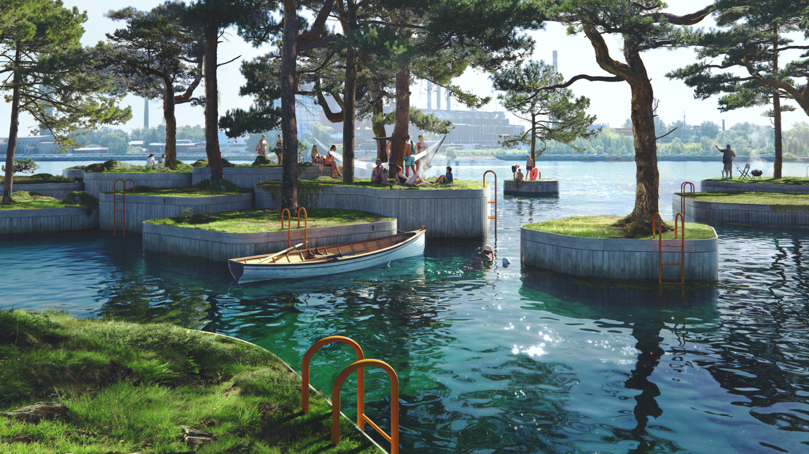
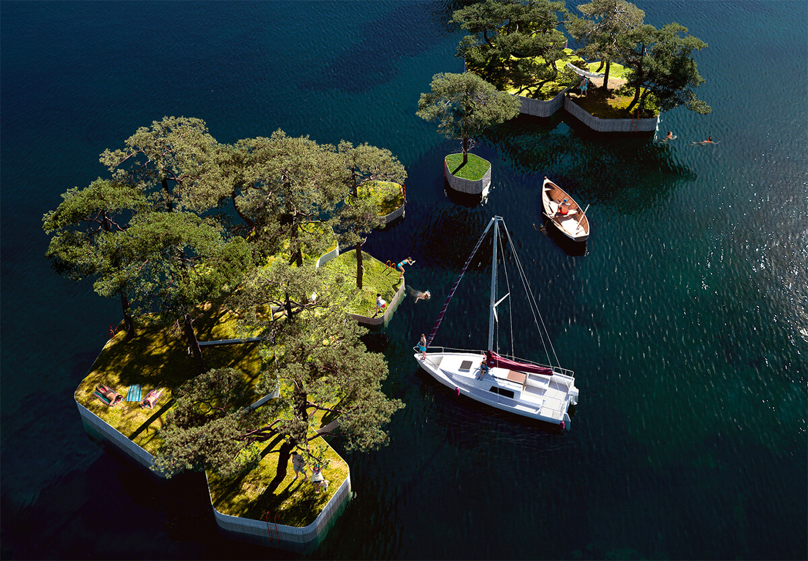
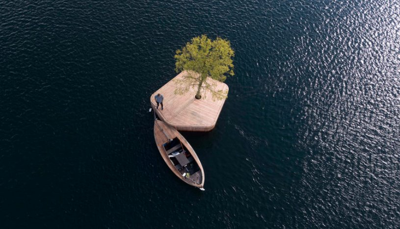

Информация
Австралийский архитектор Маршалл Блечер и датская дизайн-студия Fokstrot представили план создания нового общественного пространства в центре Копенгагена – плавучих площадок с растительными насаждениями для прогулок и отдыха горожан. Эта некоммерческая инициатива, получившая название Copenhagen Islands, базируется на успехе прототипа CPH-Ø1 – первой плавучей платформы, запущенной в 2018 году в городской гавани. В проект так называемого «паркипелага» также войдут три новых искусственных острова в 2020 году, затем последуют несколько других.
Маршалл Блечер, родившийся и учившийся в Сиднее, продолжил свое образование в Швеции, а затем переехал в Данию. Вспоминая родной город, он говорит о том, что водный пейзаж там формируют особняки и стоящие на приколе яхты. Все это не позволяет горожанам использовать собственные природные богатства в полной мере. Проект плавучих островов призван «демократизировать гавани и вернуть жизнь на воду».
Мобильные, плавучие и бесплатные общественные парки концепции Copenhagen Islands проектируются с тем, чтобы оживить забытые части старой гавани и одновременно предоставить жителям открытый доступ к местной фауне и флоре. Как и первая постройка, представляющая собой деревянную платформу площадью 20 квадратных метров с липой в центре, все Копенгагенские острова будут созданы вручную с использованием традиционных технологий на судостроительных верфях на юге города.
Информация взята с этого сайта, иконка с этого